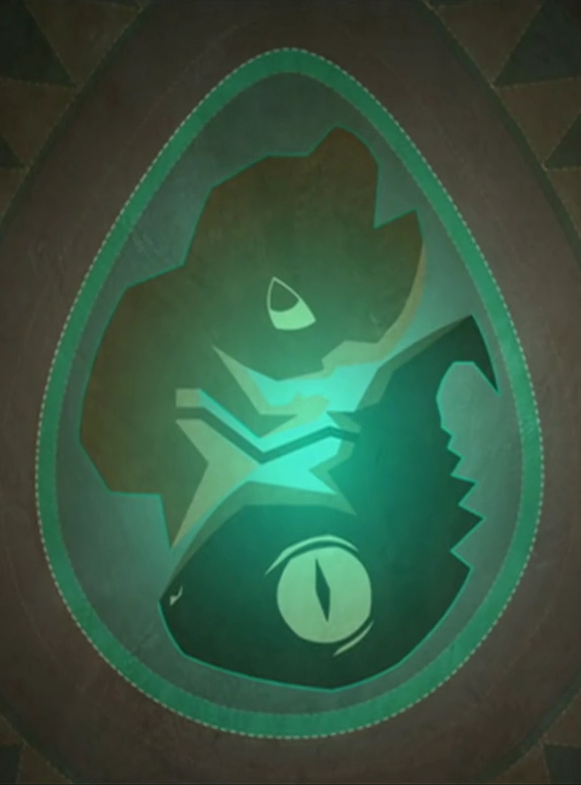
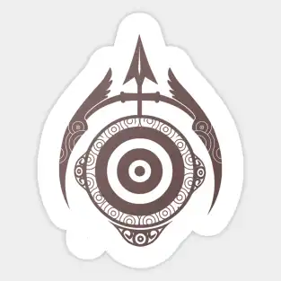
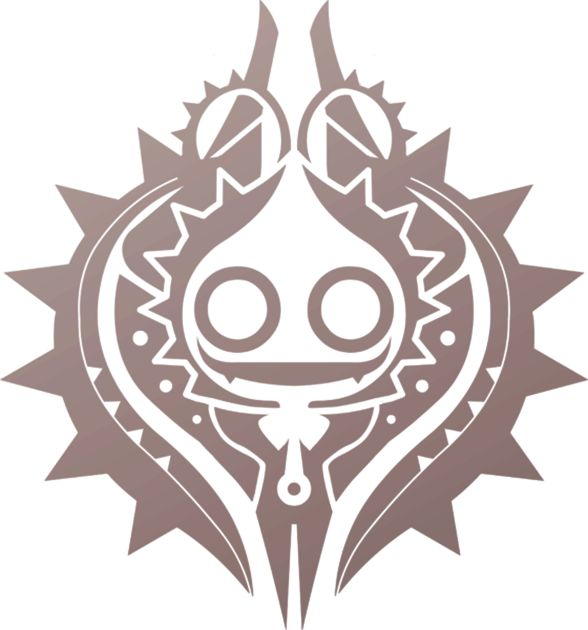
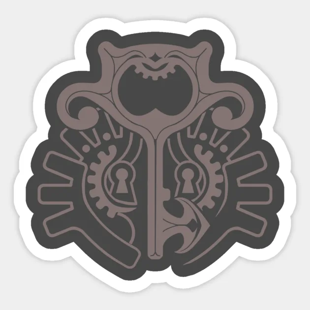

Eliatrope
Héroes mágicos con poder de portales y conexión con el Wakfu.

Ocra
Maestros arqueros, precisos y estratégicos en combate a distancia
iop
Guerreros valientes, expertos en combate físico y leales.

Sadida
Guardianes de la naturaleza con habilidad para controlar plantas.

enutrof
Aventureros y buscadores de tesoros del Mundo de los Doce.